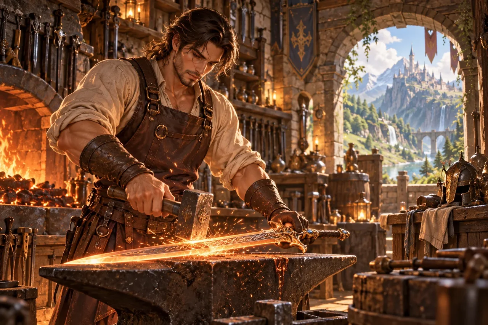

La forja de la plaza
El herrero no levanta la vista del yunque.
Te señala un banco con la barbilla y sigue golpeando. Al rato te tiende unas tenazas: no para que forjes, sino para que sujetes. La pieza es una bisagra para la puerta de la escuela y no puede esperar.
No has aprendido a forjar. Has aprendido dónde se guardan las tenazas, que es distinto y también sirve. Al salir, el maestro dice que vuelvas mañana: la puerta queda abierta.
Queda abierto Un banco libre y una pregunta: ¿vuelves mañana?